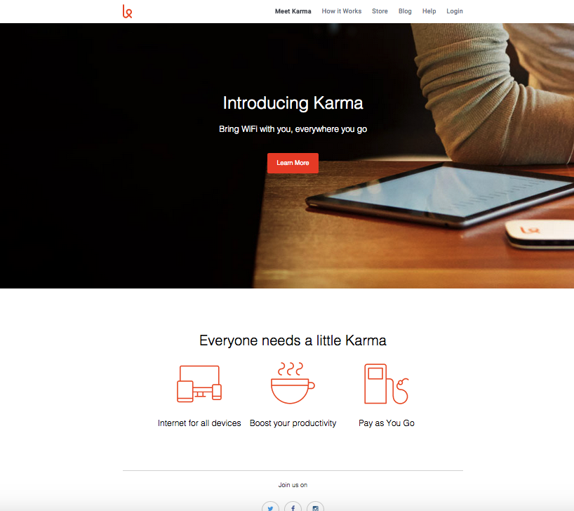

Projects

- 
Hi, I'm
I am currently a frontend web developer taking courses with Thinkful. I originally planned on applying to law school after graduation but 5 years later I ended up as a functional consultant for a IT software implementation company with a HR and payroll background. I decided to quit my job and focus full-time on learning the skills to become a web developer.
I hope that I am never complacent where I am. I want to take risks and step out of my comfort zone. Life is so much more exiting that way!
I was born in New York City and raised in northern New Jersey.
I live to travel and eat. I love hiking and reading. I love that feeling of accomplishment when I reach that awesome viewpoint on the mountain or when I finish a book.
A job that doesn't feel like a job. I want to be doing something that I love where I will constantly be learning. I would also love a job that would allow me to travel as frequently as I want.
I've been listening to BØRNS lately.